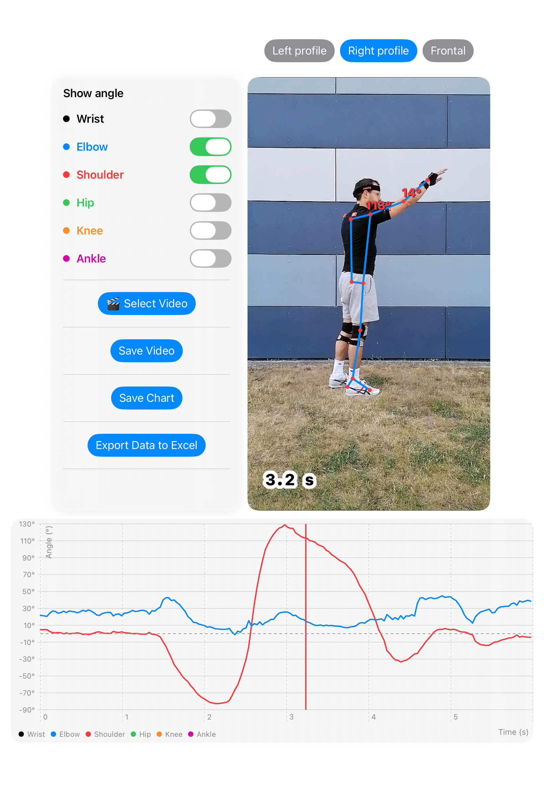

AngleUp ist eine App für den Schul- und Breitensport, mit der du
Gelenkwinkel bei sportlichen Bewegungen messen kannst –
zum Beispiel beim Basketballwurf.
Oberfläche der App

Funktionen
📐 Messung von Gelenkwinkeln aus Kurzvideos des Mediathek
📐 Videoexport mit eingezeichneten Gelenkwinkeln für Präsentationen
📐 Diagrammexport der Gelenkwinkel über die Zeit
📐 Datenexport der Gelenkwinkel in Excel
🏀 Analyse von Bewegungen wie Würfen oder Sprüngen
📊 Trainingsunterstützung und Technikverbesserung durch qualitative Messwerte
🎓 Förderung der curricularen Schulvorgaben im Bereich Bewegungsalalyse
🎓 Einsetzbar zur Erstellung von Phasenmodellen in kooperativen Unterrichtsformen